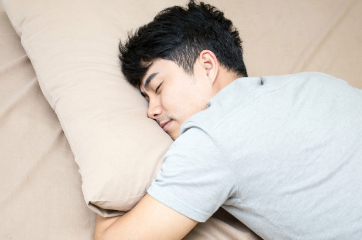
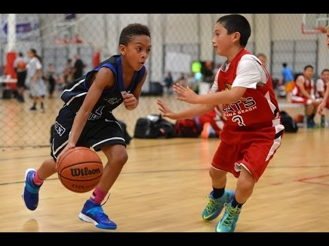
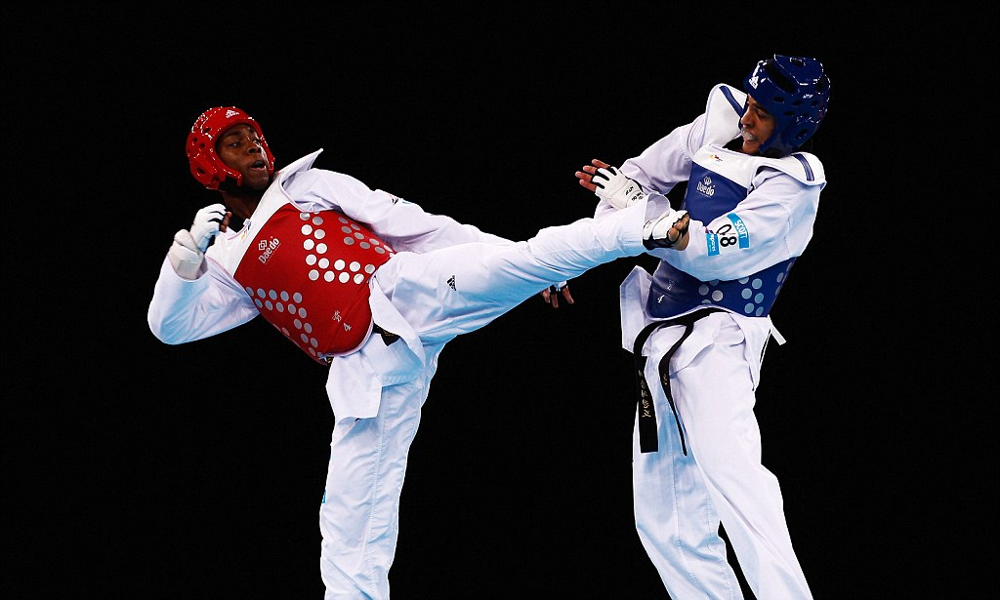
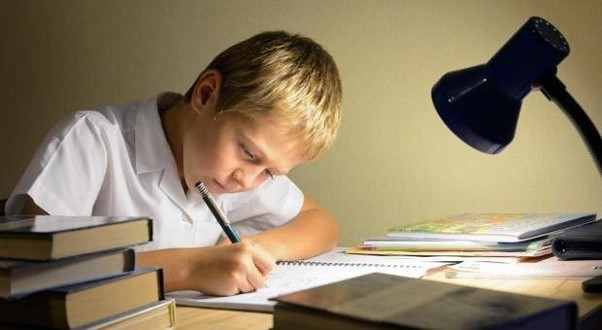

A
MY AMBITION

PNPA CADET
MY AMBITION IS TO BE A PNPA CADET.BEING A PNPA CADET IS VERY BIG OPPORTUNITY FOR ME BECAUSE IT IS THE WAY TO SERVE MY COUNTRY AND TO LEAD MY COUNTRY.I CHOOSE TO BE A PNPA CADET BECAUSE MY FATHER IS A POLICEMAN AND I SEE TO HIM THAT IF YOU ARE A POLICE YOU CAN SERVE YOUR COUNTRY AND MY FATHER IS MY MODEL TO COMMIT MY AMBITION

MATH TEACHER
TEACHER IS MY SECOND OPTION AMBITION BECAUSE BEING A TEACHER IS A BIG OPPORTUNITY ALSO FOR ME EVEN YOU CANT SERVE TO YOUR COUNTRY AS A POLICEMAN BUT YOU CAN SERVE YOU STUDENT AND TEACH THEM TO BE A SERVER OF OUR COUNTRY.BEING TEACHER IS NOT EASY BECAUSE TEACHER IS LIKE A STUDENT YOU STUDY YOU LESSON AND DOUBLE TIME NOT LIKE TH NOERMAL STUDENTS THAT DIDNT STUDY.
MY HABBITS

SLEEPING
SLEEPING IS THE BEST HOBBY WHEN YOU ARE TIRED IT BEACAUSE WHEN YOU SLEEP ALL OF YOUR TIREDNESS WILL GONE AND YOU WILL BE HAPPY WHEN YOU ARE AWAKE.

PLAYING BASKETBALL
PLAYING BASKETBALL IS MY BEST HOBBY WHEN IM BORED BECAUSE IN THIS GAME I CAN FORGET MY PROBLEMS AND RELIEVE STRESS.
WATCHING MOVIES
WHEN I AM BORED IN PLAYING AND LAZY TO SLEEP I PREFER WATCHING MOVIES.WHEN IM WATCHING MOVIES I DONT WANT TO WATCH DRAMA MOVIES BECAUSE I CANT RELATE.I PREFFER TO WATCH CARTOON MOVIES LIKE TOM AND JERERY AND ETC.

PLAYING TAEKWONDO
NOT EVERYDAY IM PLAYING TAEKWONDO BECAUSE ITS HAVE A SCHEDULE.THIS GAME IS VERY PHYSICAL GAME,AND MORE PAIN YOU GAIN WHEN YOU PLAY THIS.I PLAY THIS GAME BECAUSE I WANT TO TRY SOME PHYSICAL ACTIVITIES LIKE THIS.

STUDYING
STUDYING IS ALSO MY HOBBY WHEN THE EXAM IS NEAR.THATS WHY I ADD STUDYING IN MY HABBITS IT BECAUSE STUDYING IS MY WORK IN NIGHT WHEN THE EXAM IS NEAR.

PLAYING VIDEOGAMES
PLAYING VIDEOGAMES IS ALSO MY HABBT BECAUSE PLAYING SOME GAMES LIKE "RULES OF SURVIVAL,POINTBLANK,MOBILE LEGNDS AND ETC." CAN HELP ME TO FORGET MY PROBLEMS.